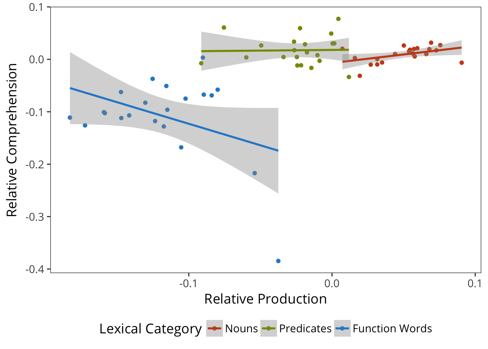
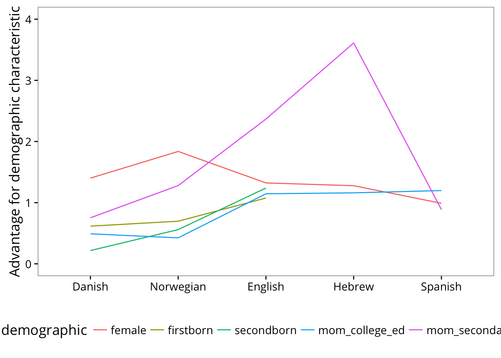

2 Methods
Our second chapter introduces descriptive facts about the dataset as well as details of data formatting and access using the wordbankr package (for the R statistical programming environment).
Statistical Methods. Description of our approach to visualization and analysis, including specifications of the statistical models we use for quantifying effect sizes and comparing across studies..
Approach to cross-linguistic analysis. Since comparisons across languages are a key part of our contribution, we outline two different approaches that we use. We identify the difficulties in comparing across CDI forms (including across different languages and even across different forms in a single language). We provide some empirical analysis of how form length affects reporting.
Every form an island. In this approach (EFAI), we compare scale-free measures of effect size across forms, not attempting to bridge the gaps between forms that have different items and different lengths (as well as being designed for different languages).
Universal lemmas. We describe how, for a subset of languages, we identified and checked conceptual mappings that could be used to compare particular concepts across languages, which we call “universal lemmas” (ULs).
Stuff about the CDI, data collection, population statistics…
We use a number of shorthand terms throughout to make precise references to aspects of the CDI data. These are defined here.
Instrument: A specific parent-report survey or questionnaire.
Item: A particular question on an instrument. Includes words (with either produces or produces/understands responses), as well as other questions like questions about morphological or syntactic complexity.
Administration: A particular instance of an instrument being given to a child.
Child: A unique individual.
Language: A particular language or language community for which an instrument has been adapted. Note that this definition of language distinguishes e.g. American and British English.
2.1 Database Architecture

Example data from the CDI norming sample (Fenson et al., 2007). Each row has a unique child identifier, demographics, and word-by-word checklist data.
Why use a database to store vocabulary data? Consider the standard format of raw CDI data. Here is a small slice of the original CDI norming data (L. Fenson et al. 1994; Larry Fenson et al. 2007). Each row is a child, each column gives a variable—either a demographic variable or the result of a particular word being administered to a particular child. Although this format is useful for homogeneous administrations of a single instrument, it cannot accommodate multiple instruments, multiple languages, or datasets with different sources or kinds of demographic information. Consolidating data across different instruments is very difficult in this format, and tracking data on children with multiple longitudinal administrations of a single instrument must also be done in an ad-hoc manner. The move to a database format allows far more flexible and programmatic handling of heterogeneous data structures from different sources.
A relational database such as Wordbank is at its heart a series of tables linked by unique identifiers. There are two primary groups of tables in Wordbank. The common tables store data that is shared between CDI instruments, including information about administrations (individual instances of a form being filled out for a child), and items (words and other questions on a form). Then the instrument tables store response data for particular CDI instruments. We currently include all items on CDI instruments, including questions about communication, gesture, morphology, and grammar (though in many of the datasets that we archive these non-vocabulary questions have not been digitized so data on these are sparse at present; see Chapters ?? and ??).
One strength of the Wordbank framework is that it allows the storage of subsidiary information about the words that are included in a particular instrument, so that this information can be used in future analyses. For example, information about grammatical and semantic categories or norms like concreteness and imageability could all be appended to particular words. This functionality is not yet present in Wordbank, however. The difficulty of compiling this kind of information for a particular set of words is compounded by the large number of languages that the database includes. We hope that in future this functionality will allow the gradual accumulation of information about the words included in the database.
2.1.1 A note on age
Developmental psychologists are very fond of using temporal units like months and years as rough guides. Children tend to begin to crawl between 5 and 8 months, and say their first word around one year. This practice is fine for rules of thumb, but we also use these units for measurement as though they wre precise (e.g. “infants with ages between 7;0 and 8;0”) when in fact such infants will vary in the number of days since their birth depending on whether their seven months of life encompassed February or not. A similar problem is true of years (because of leap years) though the problem is less dire. Yet months are the currency of language development research, and we often receive contributed datasets with months alone reported.
In Wordbank, we define a standardized month as 365.2524 / 12 = 30.4377 days. When possible, we compute the number of days from birth to testing and then compute the number of standardized months that the child has lived.
We also define an eight-month-old (age == 8) as a child who has lived between 8 and 9 standard months: their age is in the range [8 - 9) standard months.
2.1.2 Implementation
Wordbank is constructed using free, open-source tools. The database is a standard MySQL database, managed using Python and Django. Analysis apps are constructed using the Shiny package for R, an open-source statistical programming language. The code is hosted in a GitHub repository where interested users can browse, leave comments, and contribute modifications.
All data uploaded to Wordbank are open and freely available for download, both through the site itself and through the GitHub repository. The site includes only de-identified data that cannot be linked to the parents and children who provided it. Because of these features, the Stanford Institutional Review Board has determined that the Wordbank project does not constitute human subjects research.
2.1.3 Cross-linguistic and cross-instrument architecture
The general philosophy of the CDI has been summarized as “adaptation, not translation” [Dale (2015); see Chapter 1]. In other words, CDIs are a useful tool for many languages, but the forms differ between languages—words and even whole sections are added, dropped, and modified to ensure that the form captures the details of the particular language for which it is designed.
To date, more than 60 adaptations of the original English CDI have been documented (Dale and Penfold 2011). These forms vary widely, including differences in length and intended age range. Some forms include hundreds of items more than the original 680 words on the English Words & Sentences form; others are so-called ``short forms’’ and include only a hundred or a few hundred carefully selected words. Some are designed to capture development from the emergence of language through ages 3–4 years, while others are focused on very early development (like the English Words & Gestures form, designed for ages 8–18 months). All of these differences make it problematic to compare scores and score distributions across forms, even using percentile ranks, since some instruments will have more or more difficult items than others.
Wordbank is designed so that it can accommodate data from a wide variety of instruments, both within and across languages. Indeed, at the time of writing, the site includes data from more than 42,000 administrations of the CDI across 14 different languages and 24 different instruments. But because of the difficulties in comparison across instruments, our approach to cross-linguistic and cross-instrument data is to provide standardized analyses within each instrument and language, without assuming equivalence across words, instruments, or populations. Thus, our exploratory visualization tools in general do not allow comparison across languages and we urge users to interpret cross-linguistic and cross-instrument differences with caution.2 Developing statistical techniques to facilitate these comparisons is a current focus of our research.
2.1.4 “Unilemmas”: cross-linguistic conceptual mappings
FIXME: note that unilemmas follow the “English is the language of thought” approach
Some of our analyses require cross-linguistic comparison at the item level. For this purpose, we have created what we call “unilemmas” – “universal lemmas” – which are meant to be a rough-and-ready set of conceptual equivalences.
We don’t have unilemmas for every language, yet, but we do have them for FIXME.
Unilemmas were created using a two-step procedure. The first step consists of creating candidate mappings for lexical items on a particular form to the pool of unilemmas shared across other languages. This first step is often accomplished by a non-native speaker using translation resources and the context of the form (e.g., that an item occurs in the “animal sounds” section). The second step then involves checking by a native speaker of the language, using very specific directions, summarized below:
We’re looking for the best English translation of these words. These are words that are among the first words that children learn, so your translation should be closest to the meaning of the word as it would be used by a young child (say, under 3 years old). For cases when there are two equally good English words, put both. If you don’t think there is a good translation into a reasonable English word that a kid might know, you can leave the alternative translation blank.
2.2 Data
This section gives a broad overview of the data we have available. Specifics of each sample are given in Appendix A
2.2.1 Data Provenance
Many languages are inherited from CLEX.
Contributors are cited on the Wordbank contributors page.
Importing is a process of standardizing idiosyncratic datasets into a common format.
2.2.2 Overview of the Data
Wordbank curently has data from 25 language communities.
Many of these are in the original Words & Gestures (infant/toddler) / Words & Sentences (child) format, with around 400 items in WG and 700 in the WS.
Wordbank also includes some other forms that do not fit into this schema, including short forms and vocabulary questionnaires. Some of these are “short forms” with no internal category structure and fewer items overall.
The number of administrations is highly variable across instruments and languages, however.
2.2.3 Demographics of the data.
How different are our samples demographically.


 ## Statistical Methods
We use medians instead of means.
We use robust GLMs
The only exception to this policy currently is that we allow users to see responses across instruments for individual words, in the Item Trajectories analysis (e.g., the proportion of children who say the word “cat” on both Words and Gestures and Words and Sentences forms).↩